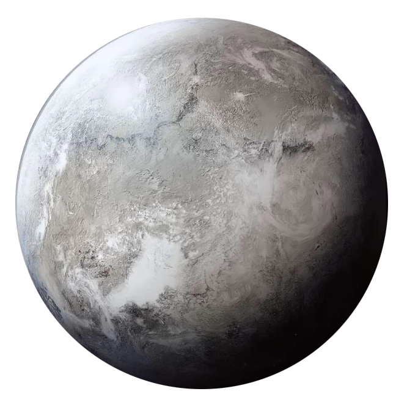

Hoth
hoth
Population: No Permanent Population
Terrain: Frozen Plains, Mountains, Snow
Orbital Metrics: 549 days per year / 23 hours per day
Languages: None
Major Cities: None
Areas of Interest: None
Major Exports: None
Major Imports: None
Astronavigation Data
Trade Routes: Ison Corridor
Hoth is an icy, frozen world with brutal weather conditions at the best of times. The planet is so remote and isolated that it doesn't appear on many star charts. While this would appear to make it a prime location for pirates, smugglers, and those who don't wish to be found, the few who try don't stay very long. Hoth's taxing conditions don't stop at the edge of the atmosphere, either. Meteors originating from a nearby asteroid field regularly strike the surface, posing a hazard to starships and potential settlements alike.
Hoth's massive ice sheets cover most of the planet's surface, concealing an enormous ocean. Natural tidal and geological pressures form spectacular landscapes of deep fissures, mountain-like ice formations, and translucent white-blue canyons. The mix of physics, water, and cold produces unexpected geysers that freeze into towering, icy columns and arches.
Surprisingly, life exists on this frozen ball of ice. Fungal and algae growths in certain areas beneath the ice provide a limited food source to some animal lifeforms. Tauntauns live on the snowbound plains, and herds rely on one another to find food and provide communal warmth. Not all life is so docile. Huge, powerful bipedal creatures called wampas hunt virtually every other living thing that might make a good meal. A wampa that finds a herd of tauntauns sheltering in a cave is in for a meal, fight, and stampede. Among the few rumors and stories of Hoth are tales of fire-breathing dragon creatures living in some of the deeper ice fissures.
The Rebel Alliance has taken a recent interest in the world as a possible location for a new hidden base. If viable, the Rebels have much work to do to build a base and adapt their equipment to the severe cold.
Hiding Out
Pirates, smugglers, and fugitives occasionally use Hoth as a temporary hideout. The remote conditions usually make any such stay short-lived. There are no permanent settlements or outposts on the planet, and those who know of the world find no economic value in the ice, snow, or even the creatures they find. Tauntauns make good mounts, and are occasionally captured and exported, but are difficult to build a successful business around.
Those who do find temporary shelter in the ice usually bring their own living quarters. While this is typically a starship, it might also be prefabricated structures set on the ice or hidden within the caves. Such activity usually frightens off more timid creatures, but small groups or individuals wandering alone eventually attract the attention of any wampa in the area. Wampas are always dangerous and may attack individually or in small packs.